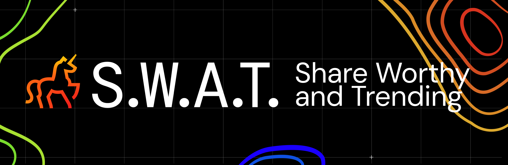

Collaborative internal branding project developed during my internship at Digitas.
Working as part of a creative team, we reimagined the visual identity for Digitas’ trend forecasting initiative through a new “heatmap” metaphor inspired by rising and cooling cultural trends. The refreshed system introduced updated typography, color palettes, logos, and presentation design while aligning the identity more closely with the Digitas brand.

The project focused on redesigning the existing S.W.A.T. branding and presentation system, which lacked structure and consistency with the broader Digitas identity. Our team developed a clearer and more scalable visual system for culture briefings, social content, and internal presentations while maintaining a bold, trend-driven aesthetic.

A selection of recent LinkedIn posts and social assets developed using the refreshed S.W.A.T. visual identity system and heatmap-inspired branding direction.